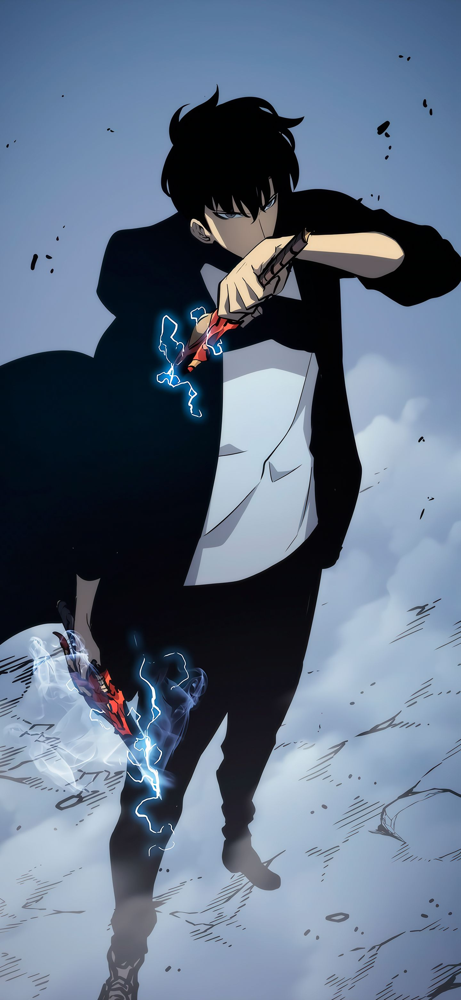
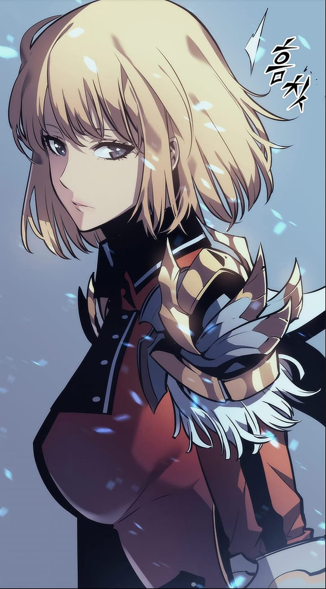
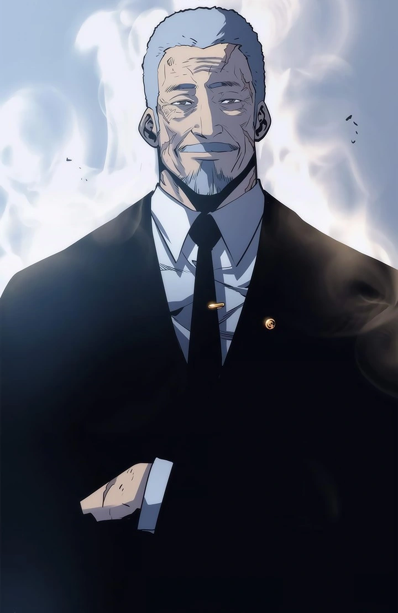
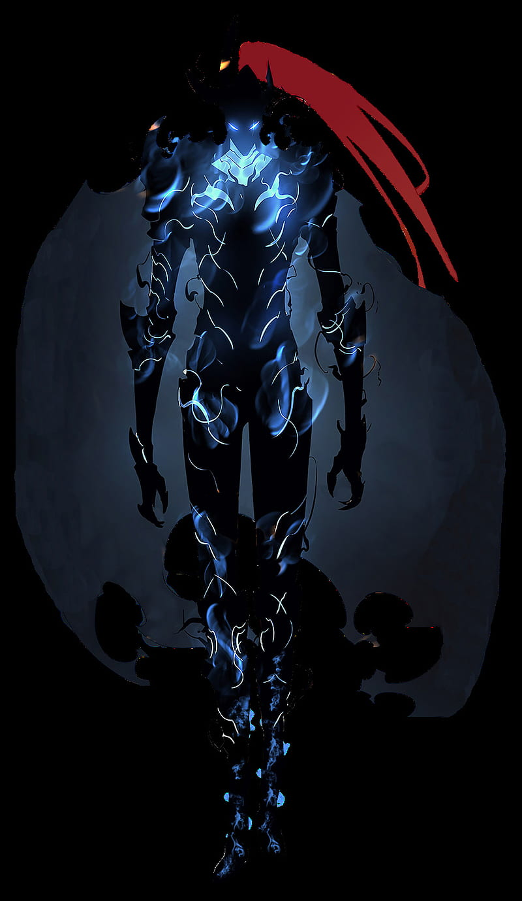

Sung Jin-Woo:
O protagonista da série, inicialmente é um caçador fraco classificado como "Caçador E". Depois de um evento traumático em uma masmorra, ele desperta um sistema especial que lhe permite aumentar suas habilidades ao derrotar monstros. Jin-Woo passa de ser o caçador mais fraco para um dos mais poderosos.
Cha Hae-In:
Uma caçadora de classe alta, talentosa e determinada, e colega de Jin-Woo. Ela é inicialmente cética em relação a Jin-Woo, mas gradualmente desenvolve um respeito e uma relação próxima com ele.
Go Gun-Hee:
O presidente da Associação de Caçadores da Coreia, uma figura de autoridade no mundo dos caçadores. Ele reconhece o potencial de Jin-Woo e o apoia em suas missões.
Yoo Jin-Ho:

O secretário de Jin-Woo e um amigo próximo dele. Ele admira Jin-Woo e está constantemente impressionado com suas habilidades e crescimento.
Beru:
Uma das sombras subjugadas por Jin-Woo. Beru é um dos mais poderosos servos de Jin-Woo e é frequentemente usado em batalhas importantes.